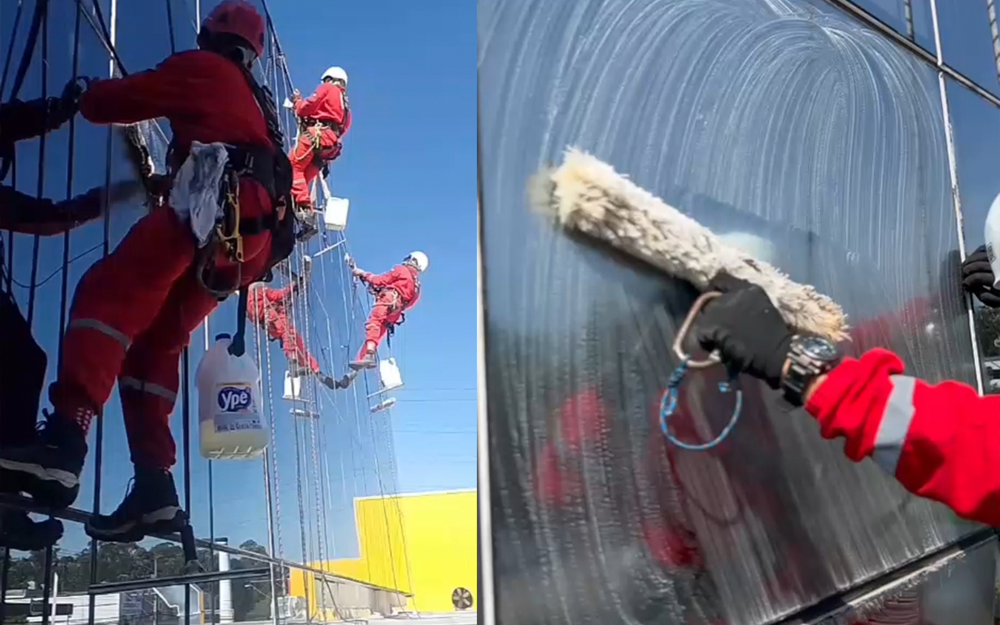
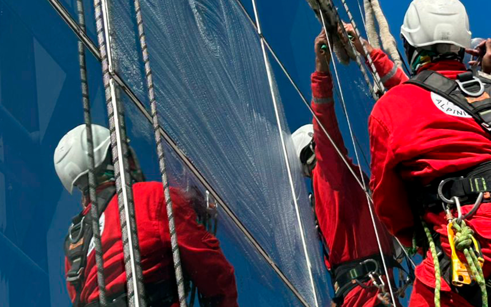

A Evolution Alpinismo Industrial oferece serviços especializados em limpeza de caixilharia, garantindo a revitalização de janelas, portas e marcos, com técnicas avançadas que asseguram resultados duradouros e segurança em altura.
Revitalize a beleza e a funcionalidade das suas janelas e esquadrias.

A limpeza de caixilharia é um serviço de detalhe que faz toda a diferença na aparência e conservação de um edifício. Em São Paulo, onde a poluição acelera o desgaste, a Evolution Alpinismo Industrial oferece uma solução completa para a higienização de esquadrias, marcos, trilhos e vedações, utilizando acesso por corda para um trabalho minucioso e seguro.
Diferente da limpeza de fachada geral, este serviço foca nos componentes que garantem a funcionalidade das janelas. A sujeira acumulada pode emperrar mecanismos e danificar borrachas de vedação, causando infiltrações e perda de isolamento. Nossa limpeza técnica previne esses problemas, prolongando a vida útil de toda a estrutura.
Focamos em todos os componentes da esquadria, removendo resíduos que comprometem a estética e o funcionamento.
A limpeza regular previne a corrosão de partes metálicas e o ressecamento de vedações, evitando reparos caros.
O serviço restaura a aparência original das janelas, valorizando significativamente a fachada do imóvel.
Com o alpinismo industrial, nossos técnicos acessam cada janela com segurança para realizar um trabalho manual e detalhado.
O serviço de limpeza de caixilharia em São Paulo é um investimento na durabilidade e na valorização do seu patrimônio. Conte com a expertise da Evolution para um resultado impecável, que combina cuidado técnico e a eficiência do acesso por corda.

Manter as esquadrias limpas e funcionais oferece diversas vantagens:
Soluções seguras e inovadoras para serviços em altura.
Entre em ContatoRespostas para as perguntas mais comuns sobre nosso serviço de limpeza de caixilharia em São Paulo.